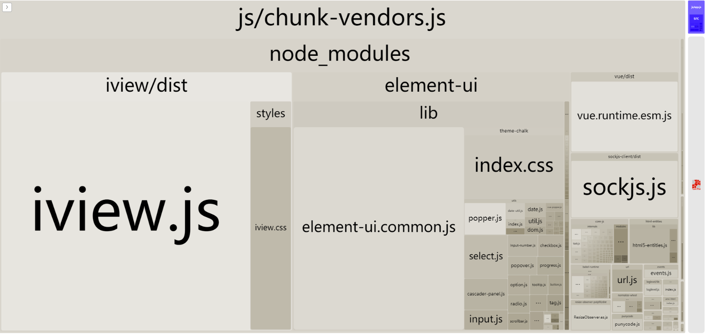
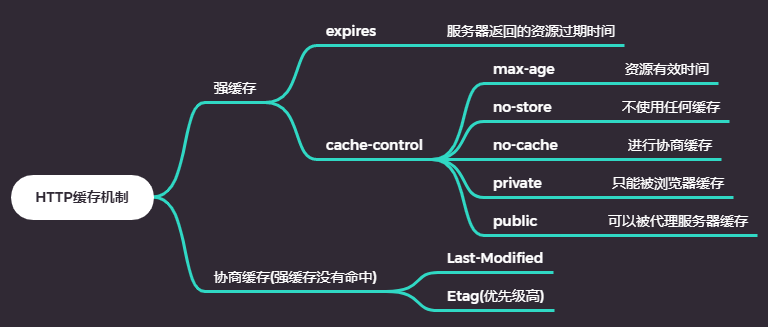
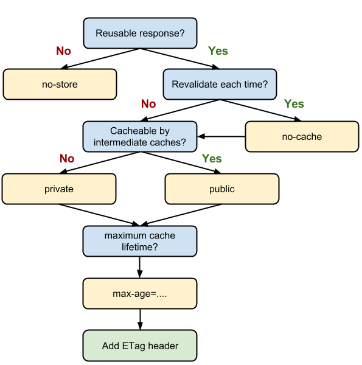
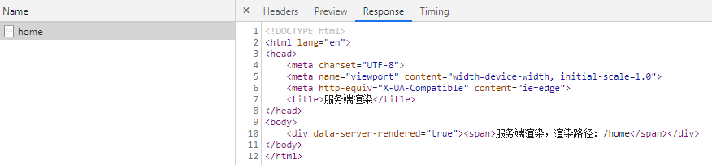
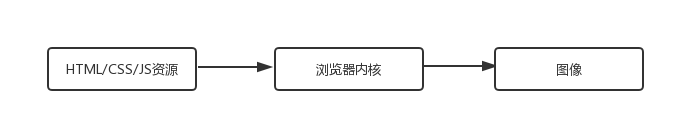
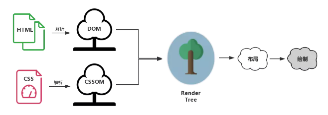
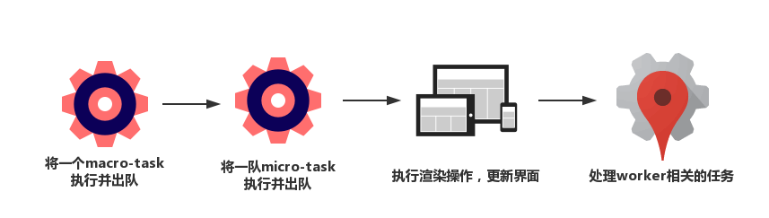

从一个老生常谈的面试题开始：
浏览器地址从输入URL到页面加载完成，经历了什么
首先按顺序说明一下从输入URL到页面显示可能做的事：
接下来性能优化就是针对上面这五个过程分解，每个过程进行优化。
对于前两个过程的优化，很遗憾我们所做的微乎其微，在这里就不谈了。剩下的三个过程优化我大致列了一个思维脑图。
从上面的思维脑图我们可以看出，网络层面的优化可以从两方面入手：
减小单次请求文件的大小
压缩文件在利用webpack前端工程化中已经帮我们做好了，我们在这里优化的点是怎么减小打包过后体积比较大的内容。在这里为大家推荐一个非常好用的包组成可视化工具--webpack-bundle-analyzer

减小压缩后体积的方法：
减少请求次数
我们可以合理的使用缓存来减少请求次数。对于我们来说http缓存是我们最为熟悉的。
http缓存机制

http缓存决策

当资源内容不可复用时，直接为cache-control设置为no-store,拒绝一切缓存；否则考虑是否每次都需要向服务器进行缓存的有效确认，如果需要，那么设置cache-control为no-cache; 否则考虑资源是否可以被代理服务器缓存，根据实际需要是设置为private还是public; 然后考虑资源的过期时间，设置对应的max-age; 最后配置协商缓存需要的Etag和Last-Modified。
这部分的内容是获取资源后浏览器展现内容方面的优化
服务端渲染


服务端渲染的优点：
服务端渲染的缺点：
浏览器背后的运行机制
浏览器的内核分为两部分：
浏览器渲染过程
浏览器的渲染过程，简单来说就是渲染引擎根据HTML文件描述构建相应的数学模型，然后调用浏览器相应零部件将网页资源代码转换成图像的结果，如下图所示：

在渲染过程中各个模块相互协作，下面列举我们比较关注的功能模块功能：
渲染过程解析
每个页面的首次渲染都经历如下阶段（下面每一个过程有可能是同步进行的）：

为了便于理解和记忆可以把渲染过程抽象成下面几颗重要的树：

并行的总结一下：浏览器的渲染过程，首先基于HTML构建DOM树，这棵DOM树与解析css生成的CSS树合并生成渲染树，通过布局和计算生成布局渲染树，浏览器以布局渲染树为基本去布局和绘制图像。
基于渲染过程的CSS优化
看如下css代码：
#myList li {
float: left;
}
大家在写的过程会本能的以为浏览器寻找起来并不困难，因为#myList是一个id选择器对应的元素应该只有一个，查找起来很简单，定位到#myList元素等于缩小了范围之后再去查找它后代中的li元素就比较简单了。但是，事实上CSS选择符是从右到左进行匹配的，也就是浏览器先遍历页面中的每一个li元素，然后再去确认它的父级有没有#myList，所以上面这种写法性能就比较差了。
下面就总结基于css的性能提升方案：
- 避免使用通配符，只对需要用到的元素进行选择
- 了解可以被继承实现的属性，避免重复匹配重复定义
- 少用标签选择器，尽量使用类选择器。
- 减少嵌套，尽量将深度降到最低。
CSS和JS加载顺序优化
CSS和JS都会阻塞上面所说的渲染过程。
在上面说明浏览器渲染过程时，提到渲染树是有DOM树和CSS树合力生成的；所以即便DOM已经解析完成，只要CSS树没有完成，用户还是见不到页面的。因此我们可以得出以下优化方案： - 尽早加载CSS，就是我们现在常做的将CSS相关放在head标签中 - 尽快加载CSS，比如加载外部CSS时，使用CDN加快加载速度
我们一起来看下面的例子：
<!DOCTYPE html>
<html lang="en">
<head>
<meta charset="UTF-8">
<meta name="viewport" content="width=device-width, initial-scale=1.0">
<meta http-equiv="X-UA-Compatible" content="ie=edge">
<title>JS阻塞</title>
<style>
#jsContent {
background-color: rgb(255, 255, 0);
}
</style>
<script src="./headIndex.js"></script>
</head>
<body>
<div id="jsContent"></div>
<script src="./bodyIndex.js"></script>
<style>
#jsContent {
background-color: rgb(0, 255, 255);
}
</style>
</body>
</html>
// headIndex.js
console.log('head标签内：', document.querySelector('#jsContent'));
// bodyIndex.js
const dom = document.querySelector('#jsContent');
console.log('body标签内：', dom);
console.log('背景颜色：', window.getComputedStyle(dom).backgroundColor);
输出结果：

从结果来看js阻塞了DOM树和CSS树的生成，也就阻塞了页面渲染，为了避免不必要的js阻塞，我们可以使用async和defer来进行优化：
或者像我们平常做的一样将js放在body最后去引用
DOM操作优化
雅虎军规中很重要的一条就是：尽量减少DOM访问；那么为什么DOM会这么慢呢？因为收了"过路费";
把DOM和JavaScript各自想象成一个岛屿，它们之间用收费桥梁连接。---《高性能JavaScript》
当我们每访问一次DOM时都会过一次桥，当操作次数过多时就会产生明显的性能问题。
过桥很慢，到了桥对岸更改操作带来的结果也很慢。很多时候我们对DOM的操作不局限于访问，而是修改它，引发外观上的改变触发回流或重绘。本质上就是我们对dom树的改变造成渲染树的改变所致。
我们一起来看一个例子：
<!DOCTYPE html>
<html lang="en">
<head>
<meta charset="UTF-8">
<meta name="viewport" content="width=device-width, initial-scale=1.0">
<meta http-equiv="X-UA-Compatible" content="ie=edge">
<title>DOM操作测试</title>
</head>
<body>
<div id="jsContainer"></div>
</body>
</html>
此时假如有个需求：想要在jsContainer里面写1000句一样的话。可以这样做：
for(let count = 0; count < 1000; count++) {
document.getElementById('jsContainer').innerHTML += '<span>这是一个测试</span>';
}
大家看到这段代码，会发现有两个明显的优化点：
第一访问太多次dom了，每一次循环都访问了一次jsContainer元素，总共访问了1000次，其实可以用个变量缓存下来，只访问一次
const dom = document.getElementById('jsContainer'); for(let count = 0; count < 1000; count++) { dom.innerHTML += '这是一个测试'; }
第二不必要的dom更改太多了，在这1000次循环中修改了1000次dom树，从而造成了1000次回流或重绘，这是很影响性能。其实我们可以只改变一次dom树：
const dom = document.getElementById('jsContainer'); let content = ''; for(let count = 0; count < 1000; count++) { content += '这是一个测试' } dom.innerHTML = content;
从上面我们可以看出减少DOM操作的核心思路就是让JS去给DOM分压
Vue内部就是利用异步更新实现DOM的优化。在介绍异步更新之前先介绍一下EVent Loop和渲染时机
Event Loop和渲染时机
Event Loop分为两种：
一个完整Event Loop过程可以概括为以下阶段：
执行渲染操作，更新界面
通过上面的事件循环过程我们可以知道异步更新DOM的最佳时机应该在微任务队列中。那么为什么使用异步更新呢？
异步更新的好处
因为异步更新只考虑结果，不会为过程买单，例如下面一个Vue的例子：
// 同步任务1
this.content = 1;
// 同步任务2
this.content = 2;
// 同步任务3
this.content = 3;
试想一下，如果Vue不是异步更新的话，会出现三次修改dom情况，但是本质上只有最后一次的修改是有意义，这样就白白浪费了两次修改。但是如果使用异步更新的话它们会先在JS层面上被批量完成，当渲染时仅仅需要针对有意义的计算结果去操作dom一次。
$nextTick大家应该都很熟悉，Vue内部实现这个方法用来进行异步更新。我们一起来看一个例子：
// html
<ul>
<li v-for="(item, index) in list" :key="index" class="fd-list-item">{{item}}</li>
<button @click="addClickHandler"></button>
</ul>
// js
{
data () {
return {
...
list: [1, 2, 3, 4, 5]
};
},
methods: {
addClickHandler () {
this.list.push(this.list.length + 1);
this.$nextTick(() => {
console.log(document.querySelectorAll('.fd-list-item'))
})
}
}
}
Vue异步更新的模拟实现-nextTick
function nextTick(cb, ctx) {
let _resolve
callbacks.push(() => {
if (cb) {
cb.call(ctx);
} else if (_resolve) {
_resolve(ctx)
}
})
if (!pending) {
microTimerFunc()
}
if (!cb) {
return new Promise(resolve => {
_resolve = resolve;
})
}
}
function microTimeFunc() {
const p = Promise.resolve();
return () => {
p.then(flushCallbacks)
}
}
function flushCallbacks() {
pending = false;
const copies = callbacks.slice(0);
callbacks.length = 0;
copies.forEach(fn => {
fn()
})
}
重绘比较好识别比如修改DOM的样式信息例如文字颜色、背景颜色、可见性(这里指的是visibility属性)。这里想重点说一下哪些操作会触发回流
回流操作
即时性,当每次获取时，浏览器都会进行回流如何减少回流和重绘
避免频繁改动
const dom = document.getElementById('fd-wrap');
for (let i = 0; i < 10; i++) {
el.style.top = ${el.offsetTop + 10}px;
}
优化：可以使用js变量将值缓存起来
const dom = document.getElementById('fd-wrap');
let offsetTop = dom.offsetTop;
for(let i = 0; i < 10; i++) {
offsetTop += 10;
}
dom.style.top = `${offsetTop}px`;
避免逐条修改样式
const container = document.getElementById('jsContainer') container.style.width = '100px' container.style.height = '200px' container.style.border = '10px solid red' container.style.color = 'red'
优化：增加类名，在css中编写相应的样式
// css
.fd-container {
width: 100px;
height: 200px;
border: 10px solid red;
color: red;
}
// js
const container = document.getElementById('jsContainer');
container.classList.add('fd-container');
DOM离线就是将在修改DOM之前先设置display: none,相当于把DOM元素从页面上拿掉了，后续对该DOM的操作就不会触发回流和重绘。例如：
const container = document.getElementById('jsContainer');
container.style.display = 'none';
container.style.width = '100px'
container.style.height = '200px'
container.style.border = '10px solid red'
container.style.color = 'red'
container.style.display = 'block'
这样中间我们不管操作多少次该DOM，最终我们只会触发两次回流